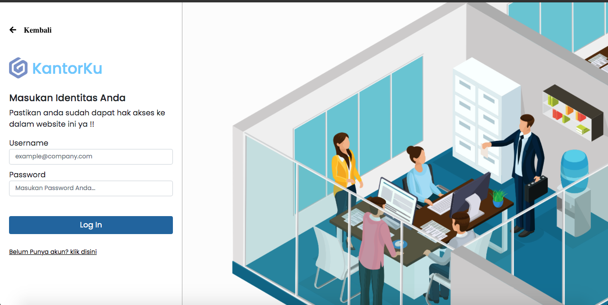
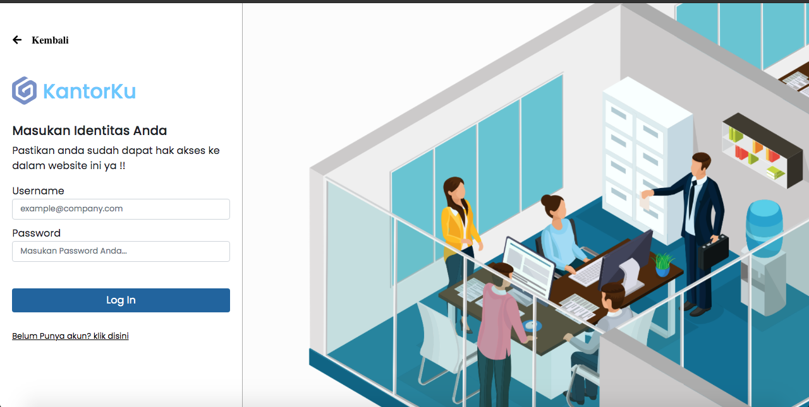

KantorKu
Web Utilitas Perusahaan
 

Kantorku adalah webapps utilitas untuk para pengusaha agar management absen , kerjaan , catatan pekerjaan pekerja, dan management gaji lebih mudah dan simple, web ini mengunakan PHP sebagai bahasa pemograman yang di gunakan di backend , dan untuk client side itu sendiri mengunakan HTML5 dan CSS , web ini pernah di ikut sertakan dalam Re-Cloud Challenge Indonesia